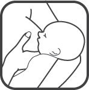
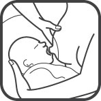
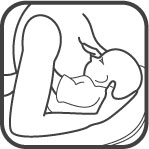
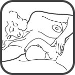

proper positioning techniques for breastfeeding
The following links will take you directly to instructions for those particulars holds. NMC recommends you read everything on this page before deciding on a technique to try—each has its advantages.
Although breastfeeding is the natural method of feeding a baby, it is a skill that must be learned in order to be effective and enjoyable. The first thing you must learn is how to correctly position the baby at the breast.
Proper positioning has far-reaching implications. First, it allows the baby to empty or "milk" the breast efficiently. In turn, efficient milking stimulates the breasts to produce exactly the amount of milk your baby needs. Secondly, correct positioning can help prevent or greatly minimize sore nipples or other complications.
When a baby has learned to grasp the breast properly and obtain milk efficiently, that baby is said to be "latched" onto the breast. Many nursing couples master latching easily; just as many others need instruction, practice, time and patience. The first few days are critical to the success of a nursing relationship. Therefore, take time during the early period to correctly position your baby so that he/she will latch correctly to your breast. The breast, a veritable "milk factory", works on a supply-and-demand basis. Therefore, in order to produce milk, you must stimulate the breasts effectively.
When you are pregnant, your breasts fill with colostrum, the first vital, nutritive substance your baby gets. After you give birth, both a complex hormonal response and the stimulation received when the baby sucks colostrum from your breasts tell your body to produce milk. Upon yet another hormonal signal, the milk travels through the duct system deep within the breast to the sinuses directly behind the areola, the darkened area surrounding the nipple. Your job is to position your baby so that his/her jaws compress these sinuses, and the baby can draw both the nipple and the areola towards the upper back of his/her mouth. The baby's palate cushions and protects the nipple as his/her tongue thrusts upward in a milking motion which helps to empty the sinuses. An "empty" breast signals the body to make yet more milk, and thus the process continues, providing exactly the amount of milk your baby needs.
In order for this process to work efficiently you must:
- hold the baby so that he/she is facing the nipple
- keep your fingers away from the area to be drawn into the baby's mouth, allowing the baby to draw in the entire nipple and as much of the areola as possible
- press your fingers slightly towards your ribs to keep the nipple extended as much as possible
- guide and insert the areola by centering the nipple in the baby's mouth and pointing it toward the top back section of the baby's mouth
- hold the baby in close to your body
The baby must:
- face the mother's body
- open his/her mouth wide (like a big yawn)
- draw the nipple in to the upper back part of his mouth
- place his gums beyond the nipple, taking in as much of the areola as possible
- have his tongue out, over his lower gum, "cradling" the nipple and areola
Most mothers commonly use the following four positions to nurse. Although you may prefer one over another, it is suggested that you try them all so you can alternate positions for variety and even stimulation. If you develop sore nipples, it is advisable to alternate positions at each feeding. In all positions, make yourself as comfortable as possible. Wear clothing that permits easy access to the breasts. Choose quiet, comfortable surroundings; have pillows, tissues, and a glass of water or juice available; and if desired arrange for a support person to coach and encourage you.
Please read all positioning techniques before selecting a specific one.
traditional or cradle position
This is the most convenient nursing position for many mothers and one you will use often.

- Sit upright in a comfortable chair. You may want to place a pillow behind your back so that your back can remain straight. You can also put a pillow on your lap to support the baby. Your feet may rest on a low footstool to elevate your lap. You may prop your arms with pillows or armrests.
- Hold the baby so that the baby's arm closest to your body can go around your midriff and his head is cradled on your arm. Your hand can then grasp his thigh or buttocks so that your arm supports his entire body.
- The baby's body should face you. The baby should not have to turn his/her head in either direction to receive the breast. You should position your baby's face so that your nipple is easily accessible to his mouth without the need for you to turn your body. Lining your baby's nose up with the nipple will help position the nipple so that it is pointed toward the back of the palate when the baby opens his/her mouth.
- With your free hand, you may want to support the breast by cupping the breast so that your thumb and forefinger lie on opposite sides of the nipple and the rest of your hand supports the breast from underneath. (You will be slightly compressing the breast in the same direction as the baby's mouth). Be sure that your fingers are far enough back from the nipple to avoid interfering with the baby's mouth. Slightly pressing the breast tissue back toward your ribs helps the nipple to protrude.
- Guide your nipple so that it brushes the baby's lips, causing the baby to "root" or open his/her mouth widely. (If he/she doesn't root, you can use your finger in his mouth to get him/her ready to suck, then transfer him to the breast.) At first, this may take a few minutes and may require patience.
- When the baby's mouth opens wide, quickly use your supporting arm to pull the baby close to your body.
- Your nipple should be centered in the baby's mouth. When your baby grasps your breast, his/her gums should surround the areola, bypassing the nipple itself, and his tongue should extend over his lower gum.
- Pull the baby's legs in close to you, angling his/her body slightly to help keep his/her nose free. Only if necessary, you can use your thumb to gently depress the breast near the baby's nose, allowing breathing space.
- As the baby begins suckling, relax your shoulders, but continue to hold the baby in close. Use pillows if they are helpful. If you feel any nipple discomfort after the first minute, start again using the above steps. Check to be sure the baby has the nipple pulled back into his/her mouth and that his/her gums surround the areola. Don't allow the baby to slip away from you and suck or chew the tip of the nipple. This will lead to sore nipples.
cross-cradle hold
This position is similar to the traditional Cradle hold, but it allows more control over the baby's head.

- Sit upright in a comfortable chair. You may want to place a pillow behind your back so that your back can remain straight. You can also put a pillow on your lap to support the baby. Your feet may rest on a low footstool to elevate your lap. You may prop your arms with pillows or armrests.
- Hold the baby so that the baby's arm closest to your body can go around your midriff. One hand can then hold his head, with your arm along his back, while your other hand can hold your breast.
- The baby's body should face you. The baby should not have to turn his/her head in either direction to receive the breast. You should position your baby's face so that your nipple is easily accessible to his mouth without the need for you to turn your body. Lining your baby's nose up with the nipple will help position the nipple so that it is pointed toward the back of the palate when the baby opens his/her mouth.
- Hold the breast so that your thumb and forefinger lie on opposite sides of the nipple and the rest of your hand supports the breast from underneath. (You will be slightly compressing the breast in the same direction as the baby's mouth). Be sure that your fingers are far enough back from the nipple to avoid interfering with the baby's mouth. Slightly pressing the breast tissue back toward your ribs helps the nipple to protrude.
- Guide your nipple so that it brushes the baby's lips, causing the baby to "root" or open his/her mouth widely. (If he/she doesn't root, you can use your finger in his mouth to get him/her ready to suck, then transfer him to the breast.) At first, this may take a few minutes and may require patience.
- When the baby's mouth opens wide, quickly bring the baby firmly to the breast.
- Your nipple should be centered in the baby's mouth. When your baby grasps your breast, his/her gums should surround the areola, bypassing the nipple itself, and his tongue should extend over his lower gum.
- Bring the baby's legs in close to you, angling his/her body slightly to help keep his/her nose free. Only if necessary, you can use your thumb to gently depress the breast near the baby's nose, allowing breathing space.
- As the baby begins suckling, relax your shoulders, but continue to hold the baby in close. Use pillows if they are helpful. If you feel any nipple discomfort after the first minute, start again using the above steps. Check to be sure the baby has the nipple pulled back into his/her mouth and that his/her gums surround the areola. Don't allow the baby to slip away from you and suck or chew the tip of the nipple. This will lead to sore nipples.
football (or clutch) hold
This position is especially helpful for mothers who have had Cesarean deliveries or who have any abdominal discomfort. It is also helpful when baby is especially active, if the baby is small or pre-mature, or if the baby is having difficulty grasping the areola.

- Sit in a comfortable position in a large chair or on a bed. Place pillows next to you up to the level of your breast and behind you to move your body forward from the back of the chair.
- The baby should be lying on his back supported by your arm and pillows. He/She should be at the level of the breast.
- Put your arm over and around the baby and hold him close to your body. The baby's feet should be extended behind your back and his/her face should be toward you. Use your forearm to keep the baby's body next to you and to support his/her shoulders. Use your hand to support his/her head and neck.
- With your free hand, cup the breast with your thumb on top and forefingers supporting the breast. Be sure that all of your fingers are far enough back on the breast from the nipple so that the baby can grasp as much of the areola as possible.
- Use your nipple to tickle the baby's upper lip to cause him/her to take root or open his/her mouth widely. At first, this may take a few minutes and may require patience.
- When the baby's mouth opens widely, bring the baby quickly and firmly to the breast. Your nipple should be centered in the baby's mouth pointed slightly towards his/her upper back palate, with his tongue over his bottom gum. Be sure that the baby's gums surround the areola, bypassing the nipple itself.
- As the baby begins sucking, relax your body as much as possible, but continue to hold the baby in close. Use pillows if helpful. Be sure the baby continues to hold the areola. If you feel any nipple discomfort, after the first minute, start again using the above steps. Check to be sure the baby has the nipple pulled back into his/her mouth and that his/her gums surround the areola. Don't allow the baby to slip away from you and suck the tip of the nipple.
lying down
Until the baby learns to suckle easily, this technique may be somewhat awkward. With practice, however it is an enjoyable way to feed your baby as you receive much needed rest. Both of you may even end up dozing comfortably.

- Lie on your side on a flat surface positioning pillows around your head and shoulders for support. Your "nursing" breast should be resting against the bed surface so that the nipple is pointing toward the baby. Through out the feeding, there may be a tendency to roll to your back thereby causing the baby to pull the tip of the nipple in an awkward position. To prevent this, place pillows behind you to keep your body on its side. Some mothers prefer to begin nursing by raising their head upon an elbow and then lowering it to rest on a pillow once the baby begins suckling.
- Lay the baby on his/her side, positioning his/her face directly in front of the nipple you are offering. A rolled baby blanket or pillow will prevent the baby from rolling back.
- The baby's ears should be in direct line with his/her shoulders. Positioned so, the baby will not need to turn his/her head. Pull the baby's legs in close to you, angling his/her body slightly to keep his nose free.
- Cup your breast with your thumb and forefingers above and below the nipple being careful to keep all fingers far back from the nipple.
- Guide the nipple to brush the baby's upper lip. This will cause him/her to root.
- When the baby's mouth opens wide, bring the baby firmly to the breast. Your nipple should be centered in the baby's mouth pointed slightly towards his/her upper back palate. The baby's gums should be surrounding the areola, and the baby's tongue should be over the bottom gum.
- As the baby begins suckling, relax your body being careful to remain on your side with the baby held in close to you. Use pillows if helpful. Start again if there is any nipple discomfort after the first minute.
You may need many trials to perfect the skill of proper positioning. Remember your baby is learning too! If your ever feel your baby is latched on improperly—his/her mouth is open only slightly, he/she seems to be chewing rather than suckling, there is a "clicking" sound in the back of his/her throat, or your nipple hurts while he/she is sucking—break the suction gently by inserting your clean little finger into the side of the baby's mouth and lift him/her away from your breast. Take several deep, relaxing breaths and begin again. Having the baby properly attached to the breast is one of the most important steps in a successful nursing experience.
Keep in mind that breastfeeding is a learned experience for both you and your baby. First attempts may be awkward, but with practice and a positive attitude, nursing will soon become second nature for both of you.
The information in this brochure was prepared by Nursing Mothers Counsel Inc. and has been approved by NMC Medical Advisory Board.